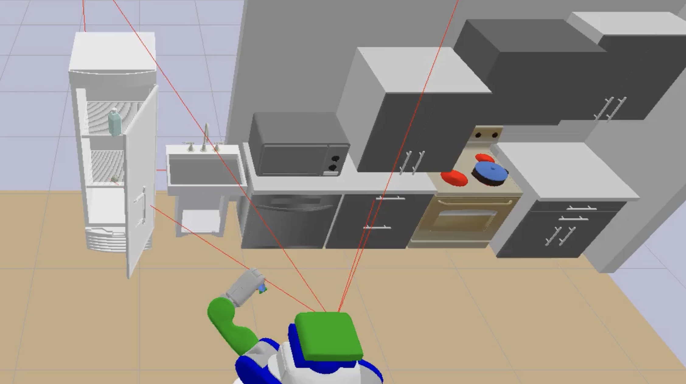
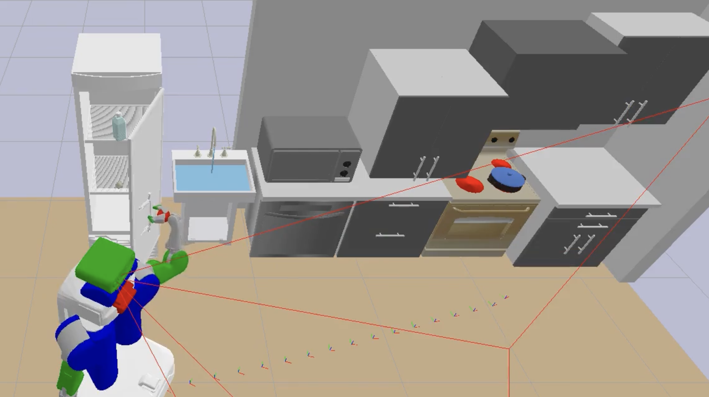
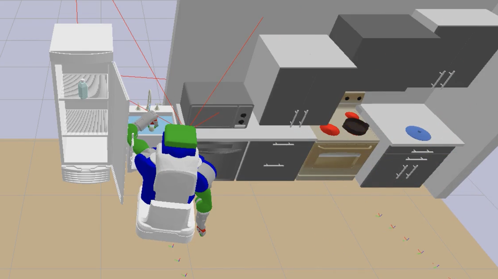

Kitchen Worlds#
A library of long-horizon Task-and-Motion-Planning (TAMP) problems in kitchen and household scenes, as well as planners to solve them
- visualize a scene in LISDF format (an extension to SDF that includes URDF)
- solve a TAMP problem using PDDLStream defined with a scene.lisdf, problem.pddl, domain.pddl, stream.pddl
- procedurally generate scenes with rigid and articulated objects
|  |  |  |
Setup#
- Grab the submodules, may take a while
cd kitchen-worlds
git submodule update --init --recursive
- Build FastDownward, used by PDDLStream planner
cd pddlstream
./downward/build.py
- Checkout the right branch of lisdf paerse
cd ../lisdf
git checkout main
git checkout pddl-constant-support
- Install the other dependencies, in a virtual environment if you'd like. Have been tested on Python 3.7 and 3.8, on MacOS and on Ubuntu.
pip install virtualenv ## if you haven't install
python3 -m virtualenv venv/kitchen
source venv/kitchen/bin/activate
pip install -r requirements.txt
pip install scipy untangle
Examples#
LISDF parser testing#
To run all tests before git push, do
cd tests
sh run_tests.sh
To test basic lisdf functions
## Test LISDF parser
python test_parse_lisdf.py
## Test load LISDF to Pybullet
python test_pybullet_lisdf.py
## Test parse problem.pddl
python test_parse_pddl.py
Planning#
To solve some test problems wih PDDLStream, -test takes the name of subdirectory inside test_cases folder.
python test_pddlstream.py -test test_pr2_kitchen
Some test cases (verified that they can run on Ubuntu with Python 3.7/3.8):

|

|
| `test_feg_clean_only` | `test_feg_cabinets_rearrange` |
Note: There may be weird bounding boxes drawn during planning and pybullet throwing errors. if that happens and planning doesn't return a solution. Stop the script and run again. It may be a pybullet problem (happens only in Ubutun with python 3.8 but not MacOS with python 3.7)
Other test cases (to be uploaded soon):

|

|
| `test_feg_dishwasher` (currently unavailable) | `test_feg_cook_only` (currently unavailable) |
Scene generation#
To build some scenes.
python test_world_builder.py
The default script creates 10 scenes with variations on the following properties of movable objects: (1) mesh model instances, (2) poses on their assigned surface or space.
Acknowledgements#
This repo works thanks for the tools provided by LIS lab members and alum:
- the pybullet_tools package is an awesome set of tools developed by Caelan Garret. A forked version is included with my own helper functions.
- the pddlstream is a planning framework developed by Caelan Garret.
- the lisdf package is an input/output specification for TAMP problems developed by William Shen, Nishanth Kumar, Aidan Curtis, and Jiayuan Mao.
All the object models and urdf files are downloaded for free from the following sources:
- most articulated object models are downloaded from PartNet Mobility dataset (Mo, Kaichun, et al. "Partnet: A large-scale benchmark for fine-grained and hierarchical part-level 3d object understanding." Proceedings of the IEEE/CVF conference on computer vision and pattern recognition. 2019.)
- most kitchen object models are downloaded from Free3D.
TODO#
- [x] add
requirements.txt - [x] upload test scene files in the format of
.lisdf-> need lisdf team to support a few more tags, includingxml <include><uri>...</uri></include> <state>...</state> - [x] upload test scene files with
<world><gui><camera><pose> - [x] update problem files in the format of
problem.pddl - [x] upload implicit domain files in the format of
domain.pddl -
[x] add instructions to solve the example problems with TAMP planner PDDLStream
-
[ ] run PDDLStream on one problem in each category, with the same domain, different scenes and goals
- [ ] run PDDLStream with execution noise
- [ ] run PDDLStream+HPN with execution noise
- [ ] run TTM with execution noise
- [ ] add instructions on sampling scenes
- [ ] add instructions on sampling goals